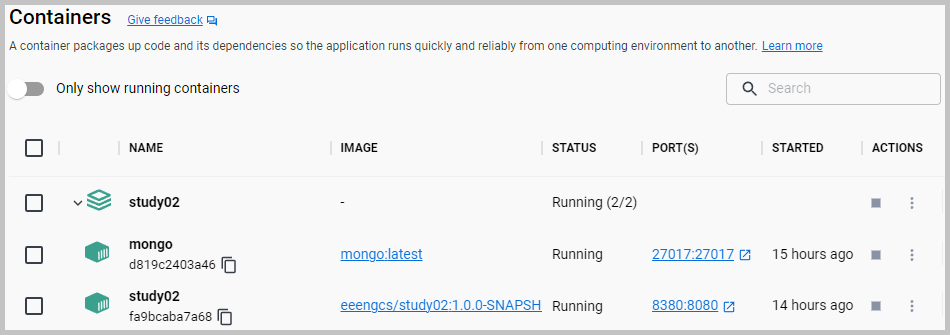

Topics: SpringBoot ● Spring WebFlux ● Reactive Streams ● Reactive REST ● MongoDB ● Docker ● MockMvc
On the server-side WebFlux supports two distinct programming models:
 The flowchart with Docker containers 'study02' and 'mongo'.
The flowchart with Docker containers 'study02' and 'mongo'.
The sections of this project:
Java source code. Packages:

 application sources :
kp
application sources :
kp
test sources :
kp
The domain objects class diagram.
The repositories for the document database MongoDB:
These repositories extend Spring ReactiveMongoRepository.

 Java API Documentation ●
Java Test API Documentation
Java API Documentation ●
Java Test API Documentation
Action:

 1. With batch file
"01 Docker build and run.bat" build the image and
1. With batch file
"01 Docker build and run.bat" build the image and
 start the container with the SpringBoot server.
start the container with the SpringBoot server.
 1.1. Docker image is built using these files:
Dockerfile and
compose.yaml.
1.1. Docker image is built using these files:
Dockerfile and
compose.yaml.

The screenshot of the created Docker containers.
Action:
1. With the URL http://localhost:8380 open in the web browser the
home page.
2. On this
home page
select 'Load sample dataset' http://localhost:8380/loadSampleDataset.
2.1. The
home page on the Docker link: http://localhost:8380.
The screenshot of the home page.
Below are presented the results from some selected links on the home page.
2.2. The 'Find department and employees by department name' (Mono) link:
http://localhost:8380/aggregate/find/findByDepartmentName?departmentName=D-Name-1.
The controller method:
kp.company.controller.CompanyController::findAggregateByDepartmentName.
The result from the 'Find department and employees by department name' (Mono).
2.3. The 'Find department and employees by department name' (Flux) link:
http://localhost:8380/aggregateFlux/find/findByDepartmentName?departmentName=D-Name-1.
The controller method:
kp.company.controller.CompanyController::findAggregateFluxByDepartmentName.
The result from the 'Find department and employees by department name' (Flux).
2.4. The 'Find all departments' link:
http://localhost:8380/departments.
The controller method: kp.company.controller.DepartmentController::findDepartments.
The result from the 'Find all departments'.
2.5. The 'Find department by name' link:
http://localhost:8380/departments/find/findByName?name=D-Name-1.
The controller method:
kp.company.controller.DepartmentController::findDepartmentByName.
The result from the 'Find department by name'.
2.6. The 'Find all employees' link:
http://localhost:8380/employees.
The controller method:
kp.company.controller.EmployeeController::findEmployees.
The result from the 'Find all employees'.
2.7. The 'Find employee by first and last name' link:
http://localhost:8380/employees/find/findByFirstNameAndLastName?firstName=EF-Name-101&lastName=EL-Name-101.
The controller method: kp.company.controller.EmployeeController::findEmployeeByFirstNameAndLastName.
The result from the 'Find employee by first and last name'.
2.8. The 'List of actuator endpoints' link:
http://localhost:8380/actuator.

The result from the 'List of actuator endpoints'.
Action:
1. With batch file
"03 CURL call server.bat" load the sample dataset and get departments and employees.
3.1. The
screenshot
of the console log from the run of the batch file "03 CURL call server.bat"
{kind=link}